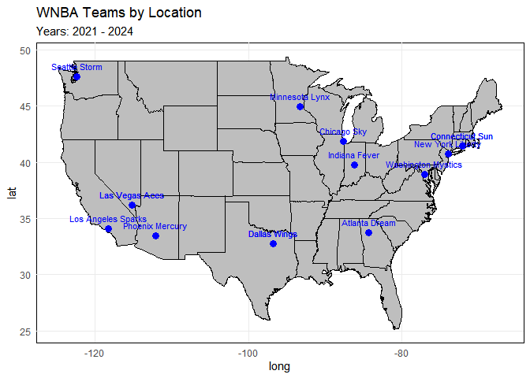
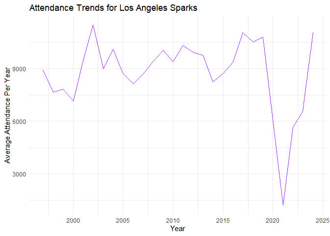
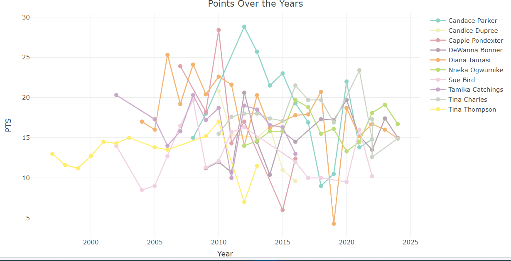

Overview
wnbaherstory is an R package that provides historical data on the WNBA (Women’s National Basketball Association). The WNBA was founded in 1997 and since then has had a lot of changes from team re-locations to ownership changes to different players going in and out of the league. This package has data on team win rate, attendance, team location, and the top high scorers. All of this data is historical and can be traced from the beginning of the WNBA (1997) to the present. User can have the option to view historical data of all time, or user can put in parameters in each function to specify what years, players, or teams they want to specifically look at. We hope this package can not only answer historical questions about the WNBA but also allow for users to see how the league has changed and grown over time.
Installation
You can install the development version of wnbaherstory from GitHub with:
# install.packages("devtools")
devtools::install_packages("sds270-f24/wnbaherstory")Examples:
library(wnbaherstory)
# Example 1: Calculate win rate
winRate("Seattle Storm")
# Example 2: Map WNBA teams
map_WNBA_teams(year_range = 2021:2024)
# Example 3: Plot WNBA attendance
plot_wnba_attendance("Los Angeles Sparks")
Example: High Scorers of All Time
career_ppg()
# Add player names for specific players
# Interactive Plot